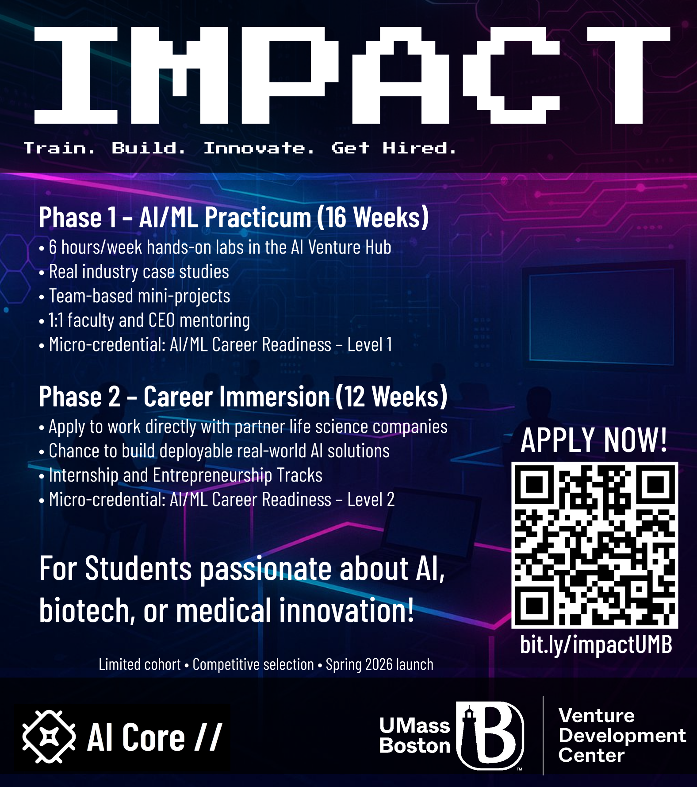
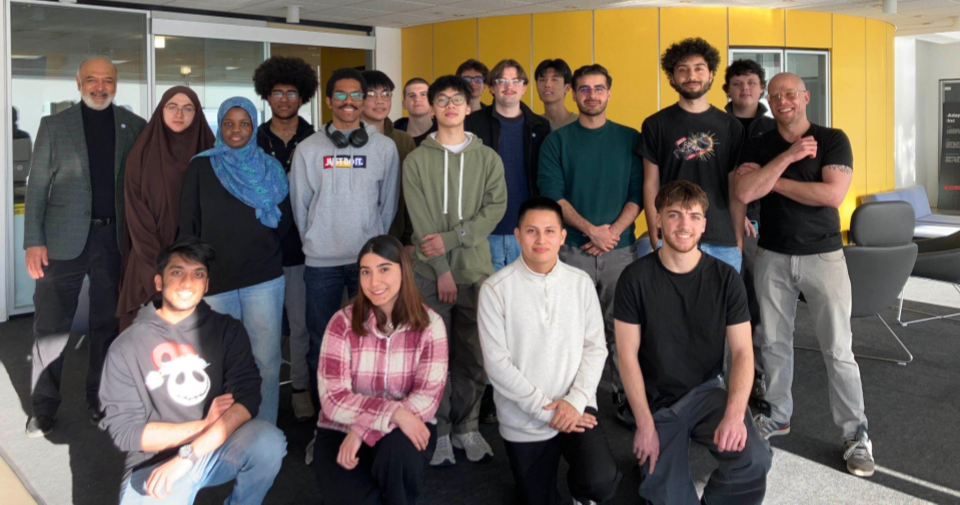
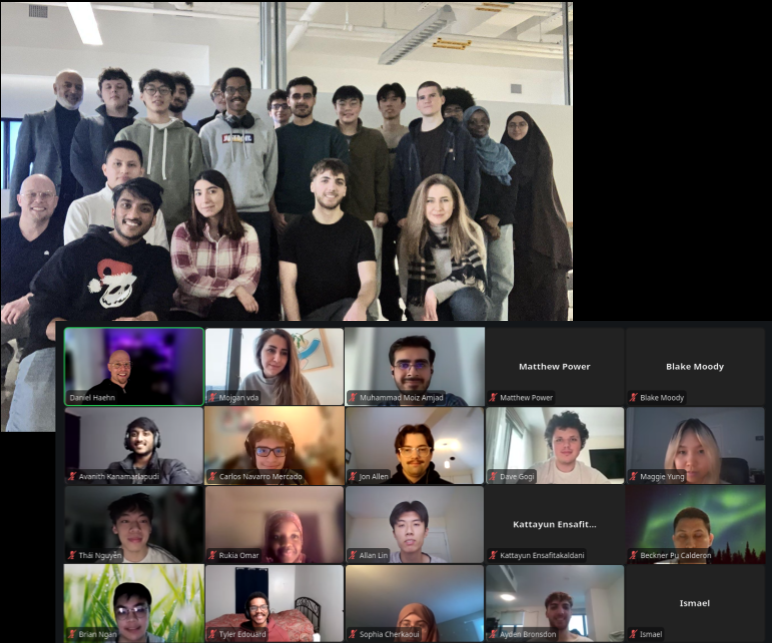
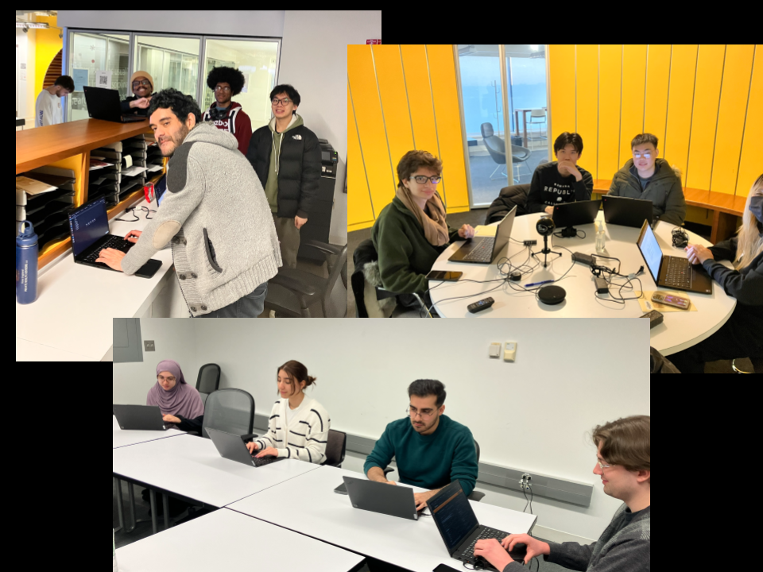
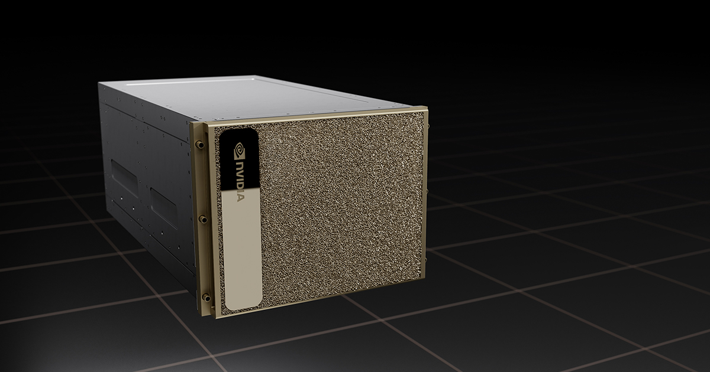

IMPACT: AI/ML Workforce Training
IMPACT (Immersive Mentored Practicum for AI/ML Career Training) is a hands-on workforce development program based at the Venture Development Center at UMass Boston. Designed for learners entering AI-driven fields in the life sciences, the program combines a compressed curriculum with intensive, mentor-guided projects.
Participants work directly with modern AI infrastructure, including NVIDIA DGX systems, and gain practical experience in data analysis, machine learning, and real-world problem solving. The program emphasizes applied skills, collaboration, and industry readiness through extended lab sessions and project-based learning.
IMPACT is supported by the Massachusetts Life Sciences Center and developed in collaboration with academic and industry partners to create scalable pathways into AI/ML careers.
APPLICATIONS FOR SPRING 2026 ARE CURRENTLY CLOSED!
Hands-On Training and Industry Collaboration

IMPACT is built around collaborative, project-based learning. Students work in teams, discuss ideas, test models, analyze results, and learn how AI/ML workflows are used in realistic professional settings. Rather than treating machine learning as an abstract topic, the program emphasizes applied problem solving, communication, iteration, and hands-on experimentation.
This team-based format helps students build confidence while also developing the practical habits needed in research and industry environments: documenting decisions, explaining results, debugging workflows, and connecting technical methods to real-world needs.

A major strength of the program is its connection to external partners. Students are introduced to authentic challenges from biotechnology, biomedical imaging, AI infrastructure, and data-driven product development. These collaborations help participants see how technical skills translate into career pathways.
Partner companies include INIA Biosciences, EntoCellular, GiwoTech, and x1025. Their involvement gives students exposure to real application domains and helps strengthen the bridge between classroom learning, mentored practice, and workforce readiness.

Students also gain experience working with advanced AI infrastructure, including high-performance GPU systems available through the UMass Boston AI Core. This access allows them to move beyond small examples and engage with the tools, workflows, and computational environments used in modern AI/ML practice.
By combining technical instruction, mentorship, partner-driven project contexts, and hands-on computing, IMPACT creates a practical pathway into AI/ML careers in the life sciences and beyond.

A dedicated NVIDIA DGX H200 system is available to IMPACT participants, providing direct access to state-of-the-art GPU computing for training, inference, and large-scale data processing. This infrastructure enables students to work with modern AI models and realistic datasets without the typical resource constraints found in educational settings.
By integrating this system into the curriculum, participants gain hands-on experience with high-performance AI workflows, including distributed training, optimization, and deployment. This exposure ensures that students are not only learning concepts, but also working with the same class of infrastructure used in industry and advanced research environments.
Organizers
IMPACT is delivered through a collaboration between the Artificial Intelligence Research Core and the Venture Development Center at UMass Boston. The program combines advanced AI infrastructure with an entrepreneurial environment, giving students access to both technical depth and real-world innovation contexts.

Daniel Haehn
IMPACT Head Instructor
Director of the AI Research Core
Associate Professor of Computer Science
UMass Boston
Avanith Kanamarlapudi
IMPACT Teaching Assistant
Machine Psychology Fellow
UMass Boston
Shubhro Sen
IMPACT Principal Investigator
Executive Director
Venture Development Center
UMass Boston
Maria Vasilevsky
IMPACT Co-Principal Investigator
Manager of Operations and Outreach
Venture Development Center
UMass Boston